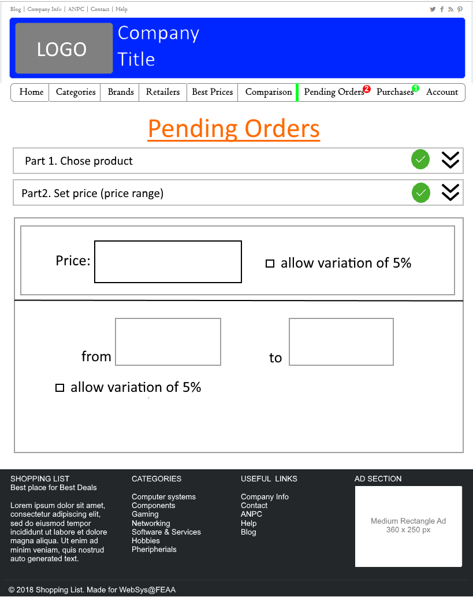
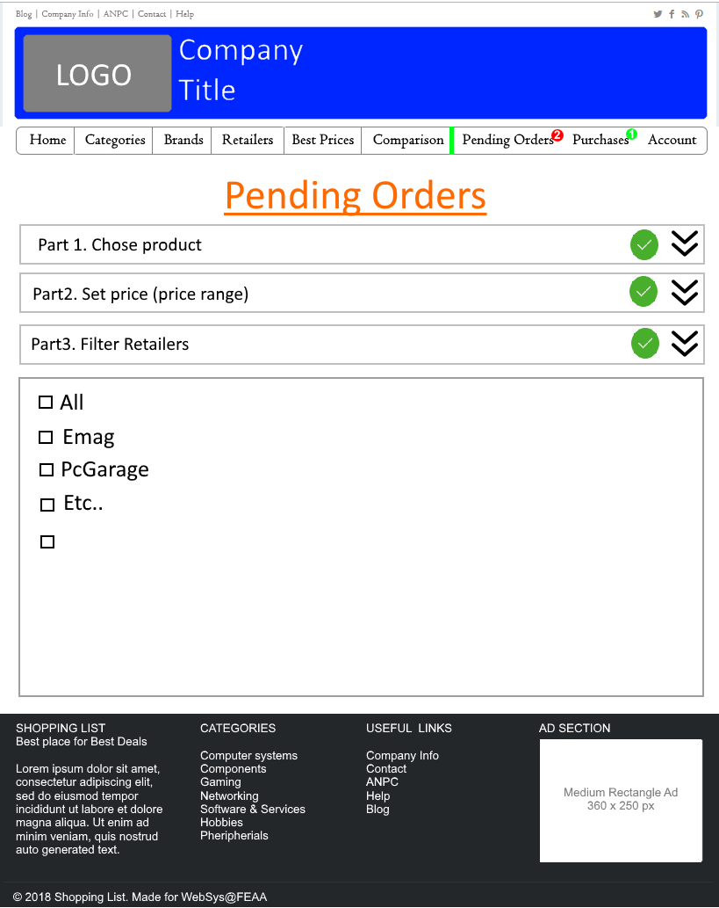

WebSys Project - Design
end of label
The following technical report will present the design of a web application made to search and follow prices of all popular e-commerce websites in order to find the best deals at best price. In the following pages we will present the tehnical design, wanted features, options, modules and the third-party APIs we will incorporate in our application. Our web app will try to automatically buy certain goods (electronics and other items) with certain characteristics and price set by the user from different shops in the next 30 to 60 days time frame, using crawlers and other APIs to accomplish its task.
Nowadays we all buy goods online it is easy, fast and comfortable, but that doesn't mean that we won't face issues, considering that we might have all sort of wants, like the color, the brand, the model, and the tehnical characteristics of the product we might get a big headache when we want to buy a certain thing. When you add the fact that there are many online retailers, things start to complicate a lot! According to Statista in the third quarter of 2018 an average shopper spent aproximatively 4 minutes on a website visit multiply that with the number of retailers visited and then you might get an aproximate of how much we spend on online shopping. Can't we reduce this? Not to mention that the statistics show that in just 2.86 percent of e-commerce website visits are converted into purchases, as statistics show. meaning that a lot of time is vasted on just searching products.
Although the price might not be the most important feature, we could rank it in top 3 most important features in buying an item online. Thus, offering the smallest price to a customer is imperatively important. This is why we design the following app, in order to simplify things for the average shopper by automating the purchase of certain goods, at a certain set price, or (if they want to buy on spot) at the minimum price currently available on the market.
Thus, the following pages will describe ShoppingList, an application meant to automatically buy wanted product at wanted prices using crawlers, non-sql databases and third-party payment processors. We assumed 2 somehow similar main functionalities (modules) of this wesite. The first module will readily be avaiable for our users to search and buy product at best prices from different retailers, and the second module will allow users to buy at a better price buy placing a batch job which for the next 30 to 60 days will scope the prices for that specific product in order to buy it at a price lower (or equal) to the one set by the user.
Thus, the first module will refer to user willing to buy product as soon as possible whilst the second module will be oriented to users willing to buy at a certain price and for whom the waiting time is not as important. The second module might also refer to companies which could buy in bulk at a much smaller price.
Our main website functions are:
The internal design of our app is described in the design section bellow, there you will also find an detailed exemplification of how the components will interact between each other. In this same section you will also find the two modules fully described with their main functionalities and their core. Also all the third-party APIs used in the project will we described below, with the main emphasize on the payment processor.
The figure below describes our main application design on a higher level. You will find some red numbered dots in it, those pinpoints are later explained below in detail, for a better understanding of our ideas. The web aplication will use multiple software solutions in order to fully function. What you will find different is the way in which the crawler fetches data from some online retailers in order to allow Apache Spark perform its task, and if necessary create the buy order.
In the following row we will present the main pinpoints that appear in the figure from the design section:
 Untangle Web Cache
Untangle Web CacheOnce the user makes the https request to the server, Untangle will act as a web cache to reduce server lag and load, by providing already stored resources (either html, images or any other site asset) to the user at a greater speed and less expense. Untangle has great performance and it should be granted several servers in order to have enough resources to serve cached objects. Untangle is also a firewall, but we won't use it in this case, as pricing goes high and we are only interested into its high performance caching. Anyway, being a multi-function tool it offers great compatibility with other security related applications.
Transport Layer Security (TLS) is the successor to Secure Socket Layer (SSL). It provides stronger and more efficient HTTPS, and contains enhancements not found in SSL such as Forward Secrecy, compatibility with modern OpenSSL cipher suites, and HSTS. Having this set in Nginx will secure upstream servers and ensure client data is safe.
Using AWS Elastic Load Balancer will ensure great workload distribution among the main servers, both for hardware resources and network. Its Network Load Balancer is best suited for load balancing of TCP traffic where extreme performance is required. Operating at the connection level, Network Load Balancer routes traffic to targets within Amazon Virtual Private Cloud (Amazon VPC) and is capable of handling millions of requests per second while maintaining ultra-low latencies. Network Load Balancer is also optimized to handle sudden and volatile traffic patterns, if needed. A mention well note, we will use a hybrid cloud services and run most of our servers in AWS, as it also offer great support for oracle.
JBoss EAP is a subscription-based/open-source Java EE-based application server runtime platform used for building, deploying, and hosting highly-transactional Java applications and services.The JBoss Enterprise Application Platform is part of the JBoss Enterprise Middleware portfolio of software. Because it is Java-based, the JBoss application server operates across platforms; it can easily run on any operating system that supports Java and has great flexibility. We motivate our choice also due to the fact that it has great compatibility and integration with Java based aplications, which will mainly be the core of our web aplication. In plus, the subscription applies once you go in production, using these servers, which might cut costs. We might also use Apache Ignite to accelerate existing Relational and NoSQL databases with Ignite™ in-memory data grid and caching capabilities
 Solr for search mechanism
Solr for search mechanismAs our products have a lot of features and characteristics, a good search engine is required. We have chosen Solr, due to its capabilities to do full-text search, hit highlighting, faceted search, real-time indexing, dynamic clustering, database integration and rich document (e.g., Word, PDF) handling. Solr is very used in the market, and offers great support and fexibility being also free.
NoSql databases might be nice, fast and flexible, but most of them lack support for transactions, and as our application will make such transaction (purchase, refunds and others) it is highy important to use Oracle Database in order to ensure full transaction support (to ensure rollback, commit and othr operation). All Oracle transactions obey the basic properties of a database transaction, known as ACID properties. Properties highly important when we speak of financial transactions, which are sensitive to us, to our customers and in front of the law.
 Apache Spark for product history
Apache Spark for product historyApache Spark is a fast in memory database (can also use just HDD is wanted) that could contain large databases, well over a petabyte. This database will be use to store product prices and other characteristics that might just not fit our RDBMS (or have a huge performance impact). Thus the large amounts of data feed by our crawlers will be handled by Spark, where some task will also be performed in order to ensure one of our main functionality (automated buying). Furthermore, Spark supports streaming and machine learning alghoritms, which might prove handy in our case, or for future development. It is also free, can run in most cloud environments, and it has good compatibility with other systems.
As we will be scaning many retailer website, we will focus on the usage of crawlers. As we have a lot of apache product in our design we decided to go for Apache nutch. Apache Nutch is a highly extensible and scalable open source web crawler software project. The crawler will take all the information for all the list of products from the retailers, and send it to our Spark Database, where it will be stored, compare and matched with other characteristics. According to a IBM study Apache Nutch clustering can get awesome performance, yet to be achive by other crawlers and systems.
 Retailers
RetailersRetailers websites and RSS is vital for our aplication, to avoid DDos false acusations, we will do our best to partnership or use as less invasive methods to gather data with the crawlers. Whether it is fully possible or not, it is to be seen in the future.
Amazon CloudFront is a content delivery network (CDN) made and delivered by Amazon through its services, on a pay as you go philosophy. Content delivery networks provide a globally-distributed network of proxy servers which cache content, such as web videos or other bulky media, more locally to consumers, thus improving access speed for downloading the content, which will allow better SEO and SEO ranking, not to mention less load on our servers which won't have to deliver performance costly images or video. CloudFront has servers all around the globe in all continents, which offers great performance and support. It is a bit costly though!
 Firewall
FirewallAlthough not much control is given over our cloud hosted environments, a hybrid could environment does have some local machines, and we find appropiate to use Barracuda Firewall, due to its dual support, for both hardware and software. Cloud firewall and security measures will also be used.
One of our most important function, is to provide our users with products having the lowest price on the market from all the specified retailers. Giving fast responses in this case would require to have the data already in the database (crawlers will take care of this at certain intervals of time). Historical data is as important as any other product characteristics, and we plan on giving a graph with historical prices from all the scoped retailers. Custom filtering on this search would be esential, Solr and Apach Spark will be responsible for this process.
The first part is represented by an advanced search, that will perform full-text search in our product database and list all available products. In the image from below you will see a list of different products. Only after clicking on one, you will be able to see a comparison of prices among retailers. In this page the price displayed is the lowest at the moment.

As main functionalities, we have to highlight the left widget, which will allow good filtering options, according to any wanted characteristics, such as price, brand, color and many more, depending by the product. The different models of the specific product will be listed.
Once a product is chosen, and See offers is clicked, the user will be redirected to the Product Details Page which is described below in the Figure 3. This page will have many functionalities, with its main being to display a list of prices sorted by each big retailer.
Our second module, or core functionality is to allow the user to set automatic purchases of certain items at a fixed (or a range) of prices. The so called automatic batch purchases will represent one of our main competitive advantage.The use of third-party payment APIs and services will be esential in this case, as it will be very complicated to build such systems from scrath, not to mention the security risks and bugs involved, and the huge cost.Refer to APIs for more. The main functionalities of this core module are displayed below:
If product IS green OR black THEN buy ELSE stop;);
The usage of third part APIs is mainly motivated by some advantages and cost reductions provided by them, such as the payment processor which increases security and reduces risk.
In the rows below we will describe all the third party APIs we intent to use.

As a payment processor, Amazon pay offers great features, and can be either very easy to manage or, can be the perfect tool for a expert in finance and marketing, depending by your choice. It has multi-platform support, and can be integrated in almost any app. Amazon Pay delivers a seamless checkout experience across desktop, mobile, and voice – making it easy for customers to make purchases wherever they are. It has great security and advanced encryption, an also it gives you certain insurances. Amazon Pay’s fast & easy checkout process, built on years of Amazon’s innovation in checkout optimization can help increase conversions & lower cart abandonments for buyers using their existing Amazon accounts. It also has fraud detection mechanisms and offers great support to you, and to your customers. It also offers easy monitoring, cost reductions and great performance with low latency and all around the glob distributed servers. It is one of the most important APIs which offers a great palete of features.
The way in which Amazon Pay will connect can be see in API Design.
Registring or login with facebook is a popular mean of account control these days, Facebook API is require to allow this connectivity, thus we must include it. Facebook API also offers great support for shareing pages, which is a great way in which we might gain more visits from social networks.
This will allow the users to set a point to where the courier will deliver, or it will direct them to a physical shop or pick-up point.
Google Analytics is now the most widely used web analytics service on the web. Google Analytics also provides an SDK that allows gathering usage data from iOS and Android Apps, known as Google Analytics for Mobile Apps.
This Concludes our list of public APIs,
The parts presented below want to bring more considerations in the eyes of the viewer (experimented or novice) so that he would further understand the full concept.
The data sent and receive between the client, server and externals is of various formats. The data transfered between the server and the user is protected using different protocols and encryptions. The user is able to send and receive plain data in the html pages. The data exchanged between the server and the external retailers will be in Json format (our main application will be written in Java also) due to Json high customizations and flexibility. Furthermore, many crawlers work best in outputing such formats which allow better support for database categorization. The third party APIs (such as Amazon Pay) will offer certain web services that provide data in many formats, but mainly xml or json for larger transactions and data imports.
The main data flow of our most important module is presented in the figure below. The Diagram has been made in accordance
to Gane & Sarson rules and figures and depicts the flow of data in our aplication. In the rows below we take the main parts
of the diagram and discuss them in-depth for further clarifications.
In order to make a order the user must have a account with all the required informations (delivery address, phone number, and other relevant details). Thus he must first log in with a valid account. The data flown between the server and the user is secure with TSL and https, in order to protect the information passed from the user to the server, and vice versa. The user will just pass the account email / or pone number and password to enter its account. The server will only reply with a confirmation or rejection of credentials. Later on, the user could change the account details from the account settings page.
Now, the client can plan a automatic future purchase of a wanted product, set the required product details, prefered retailers and set a price limit. All this information is processed by our application (within the process called in our diagram "Planned Purchase") and the specfications set by our client is inserted in a table where it will stay according to the client settings (30 to 60 days accordingly). This process ensures that all the set data is correct and the plan is prepared for the other processes which will try to match products according to the specified details and price.
Considering that we seek the smallest prices and offers, we must be quick in buying the products, thus the pay is asked in advance. In this way, we will be sure to have the required money before buying. But, considering that it is very riscky to work with such secure money transfers, and the development will require plenty resources, we decided to use a third-party API named Amazon Pay which will ensure money transfer and refunds. Keep in mind that if there is no product purchase the money will be transfered back within the required number of days (the client supports the transfer charges). The data which is transfered in this step is very simple, the client is redirected with an id to the third-party API, where the data transfered there is not of our interest, but the API will get back to use with a response in which will specify if the transfer is successful or not. After this the planned buy order is added in the batch processing, where it could conclude in a purchase. Further data will be requested, and other operations might be required, such as refunds.
If for the process 1, 2 and 3 the data is transfered between the client and the server, at process number 4 the data is transfered between the server and other retailers with the help of a crawler (and some RSS informations). The crawler will gather thousands of product details and prices, and will classify and insert those information in the database. When new data is inserted for some products, specific triggers will order a price comparisson for those Thus, our application will run at constant time making comparissons between the prices (& details) and the planned purchase orders to ensure that we don't miss an offer for our clients and make as much purchases as possible.
As better described in process 4, the Crawler(s) will gather data from the retailers, either by analyzing the RSS feed or by using (if available) special pages (that are subject of a written cooperation between us and the retail). Much of the data is transfered between the server and the retailer. The collected data will also be categorized in this step for best practices and performance.
It is quite clear that not all planned purchases will be accomplished, thus money should be returned to the client. I this case data is exchanged between us and the Amazon Pay API in order to order to money refund. Data will also be exchanged between in and the client in the matter of a email or website posting, in which we inform the user of our actions. In the case in which the client had the purchase done, but he wants to return the product from various reasons, the scenario might be a bit more complicated, as data needs to be transfered to the retailers also. The request will be automatically processes, in order to ensure the product return. The money will get back straight to the client account, in order to avoid Amazon Pay fees.
The taskflow presented below (Figure 6) resembles the path followed by the user that wants to add a planned order. This visual summary of broad types of tasks which is then broken down into series of smaller tasks to have a mapping of the related tasks so these tasks may then be executed easily. It provides a graphically represented order of the tasks to be performed from beginning until the end.

This Concludes our further arhitectural discussions. The above Data flow and Task flow should bring more light in the eyes of the viewer, and furher understand the full extent of our arhitecture.
Our Interface will try to be as good as possible and to offer great compatibility across devices and be easy to read and use. The image below shows a sketch of our homepage, we also used some images in order to try to make it look like a prototype.
Nothing much different than any retailer website, except for the tqo main modules, we described above. In the menu of our app, you will see Pending Orders and Purchases both having notifications, meaning that:Please refer to the structure design to see the first module.
The first part will include the order creation form, as shown in the image below:
 It has 5 sections all drop-down, each having a scope. The first section is for chosing the products, setting its characteristics and features.
The second will allow you to set a price or a price range, according to your wishes.
The third, will allow you to chose from the retailers. Filtering by your wish.
Custom Rules is also added, but it is optional.
The last Section will redirect to Amazon Payments.
It has 5 sections all drop-down, each having a scope. The first section is for chosing the products, setting its characteristics and features.
The second will allow you to set a price or a price range, according to your wishes.
The third, will allow you to chose from the retailers. Filtering by your wish.
Custom Rules is also added, but it is optional.
The last Section will redirect to Amazon Payments.
Part 1:
Part 2:
Part 2:
Our chosen logo is the following:
It has mild colors and it resembels its main functionality, that of making purchases by its own. We have chosen a nice font for the name of the product. We also wanted to add the slogan(Best place for best deals.), but that would make it to large. We will use the slogan on presentation pages. The logo is just enough for our company. We can also use the logo as a favicon, the S will fit nicely in the tab header of the browser. Your brand strategy is how, what, where, when and to whom you plan on communicating and delivering on your brand messages. Where you advertise is part of your brand strategy. Your distribution channels are also part of your brand strategy. And what you communicate visually and verbally are part of your brand strategy, too. We like it the way we have chosen our logo.
Our color palet will be a mild gradient, with distribution from the top to the bottom of the page. The color will be very mild, as we have a lot of product images! And thus, it will be annoyning to have a rainbow of colors in the website.

The case studies presented below come in the help of the user and stand out as detailed website explanations.
The below case studies will work as a user documentation or (might be) a FAQ section, as it provides a detailed description of how to fully use certain site components, functions and futures. Considering there is no prototype for the aplication, the images presented resembles some storyboards of the actual application and might prove different from the end product. Still, they will do the job of presenting the correct way of handling main functionalities.
The video demonstration we created highlights the main site features and tends to bring a markatable aspect onto our company.
...videowork in progress
"Structured Systems Analysis: Tools and Techniques", by C. Gane and T. Sarson (New York: IST, Inc., 1977).Anexes, none yet!